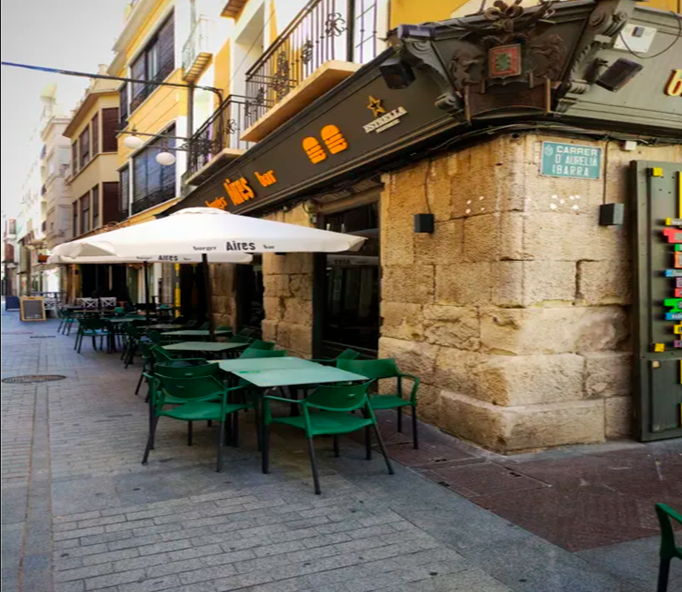
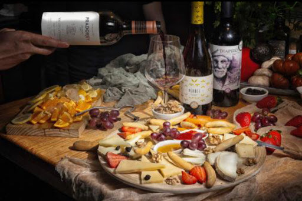
Bar vino y más elx:(Puntuación: 4.9) Es uno de los favoritos actuales. Ideal si buscas una experiencia que combine buenos vinos con tapas elaboradas. Su ambiente es acogedor y moderno, perfecto para una cena relajada o un buen copeo.
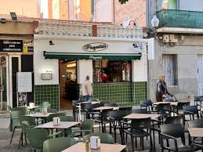
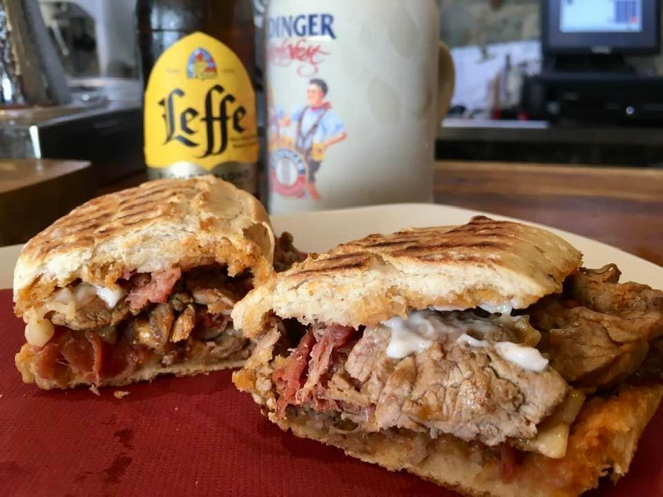
Paquita´s bar: (Puntuación: 4.9) Ubicado en la zona de Altabix, es conocido por su excelente servicio y sus raciones generosas. Es el típico bar donde te sientes como en casa, muy recomendado para ir con amigos. .
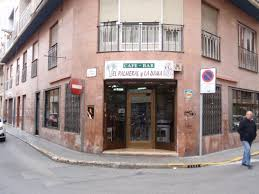
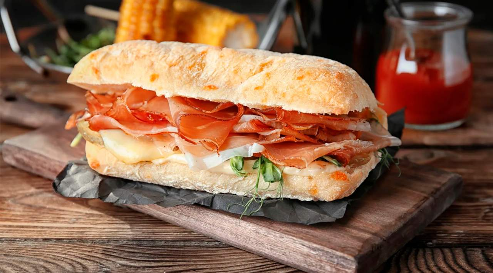
Paquita´s bar: (Puntuación: 4.9) Ubicado en la zona de Altabix, es conocido por su excelente servicio y sus raciones generosas. Es el típico bar donde te sientes como en casa, muy recomendado para ir con amigos. .
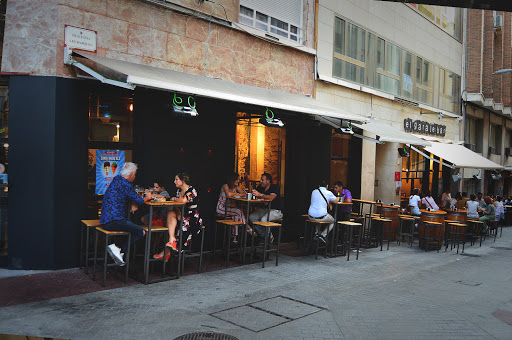
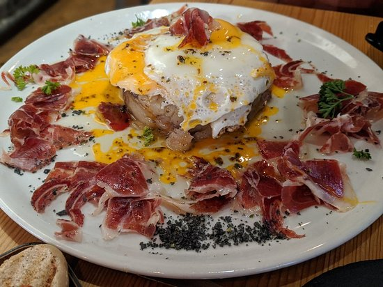
Bar el palmeral y la dama:(Puntuación: 4.4) Un clásico total en el centro de Elche. Es famoso por sus "fritos" (delicias de Elche, bolitas de queso, etc.) y su animada barra metálica, especialmente durante la hora del aperitivo los fines de semana. .
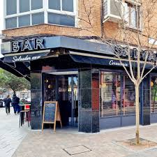

El garaje bar elche:(Puntuación: 4.4) Situado cerca del centro, ofrece un concepto más industrial y moderno. Es genial para tapeo informal con un toque diferente y una buena selección de bebidas. .


Bar de tapas Salvador:(Puntuación: 4.6) Si buscas autenticidad, este es tu sitio. Destaca por su cocina casera y tapas tradicionales ilicitanas a muy buen precio. Es muy popular entre los locales para el almuerzo o tapeo de mediodía. .
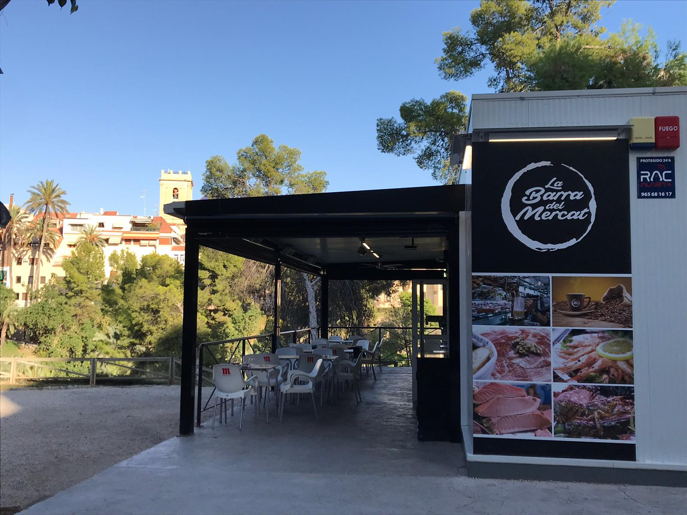
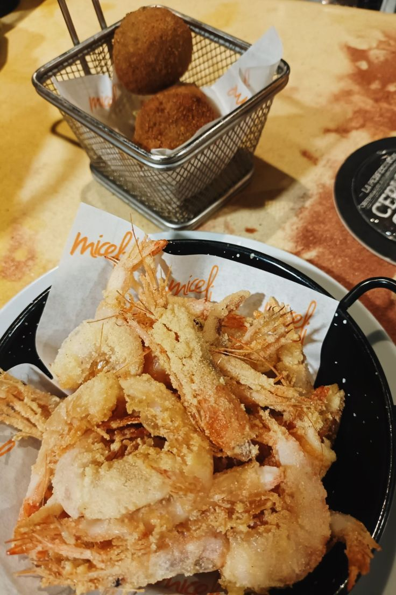
Mesón GranainoAunque es un restaurante de renombre, su zona de barra es legendaria en Elche. Es el lugar perfecto para un tapeo de alta calidad (marisco, montaditos gourmet y cocina tradicional) en un ambiente más elegante. .
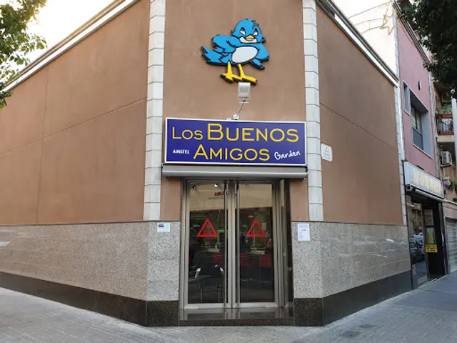
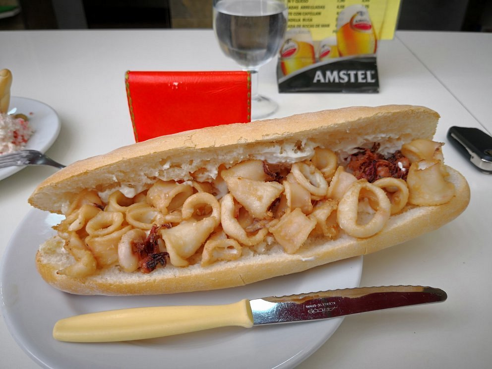
Bar los buenos amigos:(Puntuación: 4.3) Un establecimiento de toda la vida, ideal para empezar el día con un buen almuerzo o disfrutar de raciones clásicas por la tarde. Su ambiente es muy cercano y tradicional. .